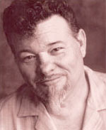
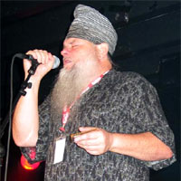
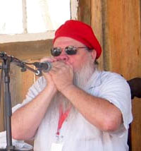

Джеймс Харман живет в южной Калифорнии, но в его музыке явно прослеживаются его юго-восточные корни. Харман родился в 1946 в Аннистоне, Алабама, в музыкальной семье. Он начал брать уроки игры на фортепьяно и петь в церковном хоре с четырех лет. Джеймс любил играть на Хонеровских губных гармониках своего отца после уроков фортепиано. Он экспериментировал и с другими инструментами, включая гитару, орган, бас и барабаны, играл соло и в ансамбле с членами семьи на танцах и вечеринках. Джеймс Харман рано повстречался с блюзом - на углу своей улицы: чернокожий "Радио" Джонсон, местный слепой уличный певец, который играл на гитаре ножом как слайдом, стал его первым кумиром и партнером.
Профессиональная карьера Хармана началась в 1962, после переезда в Панама Сити, Флорида. По приезду, он познакомился с единомышленниками, которые водили его по черным ночным клубам, чтобы послушать таких исполнителей как Литтл Джуниор Паркер (Little Junior Parker), Джимми Рид (Jimmy Reed), Литтл Милтон Кэмпбелл (Little Milton Campbell), Слим Харпо (Slim Harpo), Бобби Блэнд (Bobby Bland), Оу Ви Райт (O.V. Wright), Би БИ Кинг (B.B. King), Отис Реддинг (Otis Redding), Соломон Берк (Solomon Burke), Джо Текс (Joe Tex) и Джеймс Карр (James Carr). Харман стал регулярно посещать клубы и, в конце концов, местные хаус бэнды стали приглашать его поиграть. Он стал известен как "паренек, который поет как мужик". Под впечатлением от того что его приняли, он собрал первый из своих многочисленных ритм-энд-блюз составов, известных под называниями King James and the Royals; Snakedoctor; Disciples of Soul; Disciples of Blues; The Disciples; Voo Doo Daddy; Soul Senders; Pieces of Eight; Kingsnakes; и в конце концов, The Icehouse Blues Band.
Шумиха вокруг живых выступлений Джеймса привлекла охотников за талантами из нескольких южных звукозаписывающих компаний. Эрл Колдуэлл (Earl Caldwell), управляющий Swinging Medallions, заключил с Харманом контракт и привез его на студию Ken-Tel на улице Пичтри (Peachtree Street) в Атланте. В 1964, 18-летний Джеймс записал первую из восьми сорокопяток - сингл, который появится на пяти различных лейблах и отправит его на гастроли. Джеймс гастролировал в восточной части страны до конца 60-х, выступая на танцах, вечеринках, в ночных клубах, в колледжах, стриптиз- салонах и в придорожных кабаках. Харману приходилось работать буквально всю ночь, играя по шесть - восемь сетов. Он также выступал на разогреве у популярных R&B исполнителей того времени.

В середине 60-х Харман переезжает из Чикаго в Нью-Йорк, Майами, и Новый Орлеан, пытаясь найти пристанище для своей музыки. По разным причинам эти переезды себя не оправдали: В клубной жизни Чикаго было не пробиться - там выступали Хаулин Вулф, Мадди Уотерс, Чарли Массельуайт и Пол Баттрфилд. А ветреный Нью-Йорк был слишком холодным для южанина. Новый Орлеан был жестоким городом, его музыкальная жизнь в то время состояла из "47 групп на Бурбон Стрит, которые исполняли 'Proud Mary'", вспоминает Харман, а клубная жизнь в гетто состояла преимущественно из R&B и соул исполнителей. Студийная работа тоже не приносила пользы. Харман пользовался некоторым успехом в Майами. Днями он выступал на многочисленных сборищах хиппи, сценами таким выступлениям служили платформы грузовиков, а по ночам он пел в клубах типа Climax или Jet-Away Lounge. В последнем, он стал первым белым исполнителем и одним из первых группе со смешанным расовым составом. Тем не менее, возможности в Майами были ограниченные, даже со студийным и гастрольным стажем Хармана. Все на что могло рассчитывать большинство местных групп - разогрев перед большим концертом заезжих знаменитостей.
Итак, в 1970, следуя совету своих друзей-меломанов из Canned Heat's Боба Хайта (Bob Hite), Элана Уилсона (Alan Wilson) и Генри Вестина (Henry Vestine), Харман переезжает в южную Калифоринию. Через месяц Харман уже выступает в Golden Bear, Troubadour, Ash Grove и Lighthouse, в заведениях, где он со своим бэндом мог исполнять настоящий блюз для настоящих ценителей блюза. И почти сразу Харман вступает в контакт с небольшим сообществом родственных душ, таких как Род Пьязза, который руководил группой Bacon Fat, Ким Уилсон (Kim "Goleta Slim" Wilson) и Джон Логан (John "Juke" Logan) из группы Brother Chaos. Вместе эти четверо исполнителей с их бэндами аккомпанировали или открывали выступления последних замечательных блюзовых исполнителей предшествующей эры, из тех кто жил в Лос-Ажелесе или приезжал туда с гастролями. Группа "Icehouse Blues Band" с Джеймсом Харманом выступала от одного до шести раз в неделю с такими музыкантами как Биг Джо Тернер, Джон Ли Хукер, Фредди Кинг, Мадди Уотерс, Альберт Кинг, Би Би Кинг, Ти Боун Уокер, Ллойд Гленн, Лоуэлл Фулсон, Эдди "Клинхэд" Винсон, Джонни "Гитара" Ватсон и Альберт Коллинз. Мода на диско и городских ковбоев конца 70-х почти лишила блюзовых музыкантов клубной работы. А два приступа желудочного кровотечения и два мучительных развода почти лишили Хармана жизни. Но в 1977 он вновь собирает группу со своим старым пианистом Тейлором, впервые под своим именем.

Группа The James Harman Band - это веха в карьере многих заметных музыкантов, включая Фила Элвина (Phil Alvin) и Билла Бейтмана (Bill Bateman), которые ушли из группы в 1978 чтобы собрать the Blasters; Тейлора ("Piano Gene") Taylor, который покинул группу в 1981, также чтобы присоединиться к the Blasters, а впоследствии к the Fabulous Thunderbirds; и Дейвида "Кида" Рамоса (David "Kid" Ramos). Рамос играл с Харманом в течение 10 лет, он отошел от музыки в 1988, а затем вернулся в качестве гитариста the Fabulous Thunderbirds. Из группы Хармана также вышли покойный Майкл "Холливуд Фэтс" Манн (Michael "Hollywood Fats" Mann), который покинул свою группу в 1980 и присоединился к Харману и проработал с ним 5 лет. Мультиинструменталист, сессионный музыкант и композитор Джефф Термс (Jeff Turmes) играл на саксофоне у Хармана в течение многих лет, а затем, с 1988 в течение 6 лет играл на бас-гитаре. Среди барабанщиков, игравших в группе Хармана Ричард Иннес (Richard Innes), Стефен Ти Ходжес (Stephen T. Hodges), Стив Мугалиан (Steve Mugalian), Пол Фасуло (Paul Fasulo), и это далеко не все. Вместе с тем, комания Хармана Icepick Productions выпустила более десятка альбомов, не считая пятнадцати, которые Харман выпустил еще до того, как стал использовать свое имя. 29 выпущенных альбомов являются трудом его сорокалетней с лишним карьеры. Продолжая выступать и записываться, Харман выступает еще и в роли продюсера нескольких проектов, совместно с давним партнером Джерри Холлом. Они работают вместе с 71-го года. Холл был звукорежиссером каждой песни на каждом выпущенном Харманом альбоме с того времени. Вместе партнеры продюсировали множество разных музыкнтов.
Помимо этого, 17 из песен Хармана использовались в кино и на телевидении, самая знаменитая "Kiss of Fire" (с альбома Those Dangerous Gentlemens), использовалась в фильме "The Accused", с участием Джоди Фостер. Песня Джеймса "Jump My Baby" (с альбома Thank You Baby) звучала в трех разных фильмах, включая "Burning Love." Харман номинировался на премию Хэнди 14 раз, за песни выпущенные им, и песни с альбомов других музыкантов, таких как его друг и ученик Кид Рамос. В разное время Харман номинировался на "Блюзовую песню Года", "Блюзовый сингл Года" и даже "Переиздание Года" за переиздание альбома 1987 года "Extra Napkins". Джеймс Харман был включен в Зал Музыкальной славы Алабамы, а Канадский журнал Real Blues Magazine присвоил ему премию за "Лучший блюзовый альбом Года" .
Харман дает концерты в 18 странах, количество его выступлений в год составляет 250, включая участие в таких Северо-Американских фестивалях как Long Beach Blues Festival, the New York State Blues Festival, the Kansas City Blues and Jazz Heritage Festival, the King Biscuit Festival in Helena, AR, the Bumbershoot Festival in Seattle, the Bayfront Blues Festival in Duluth, MN, the Waterfront Festival in Portland, OR, the Edmonton (Canada) Blues Festival, и других от Монреаля до Мексико Сити. За пределами Америки Харман принимает участие в бельгийском фестивале the Peer and Spring Blues Festivals, Норвежских Notodden and Hell Festivals, Английском Great Britain R&B Festival in Colne, Итальянских the Milano and Pistoia Festivals и австралийском the Bayron Bay Festival in Australia, и это далеко не все.
За более чем 4 десятка лет гастролей и записей, Харман зарекомендовал себя оригинальным блюзовым музыкантом и продюсером. На записях и во время живых выступлений Харман создает музыку уникальную и своеобразную, в то же время четко отражающую его любовь к корням блюзовой музыки. Харман понял главный секрет много лет назад: чтобы добиться успеха на долгие годы, нужно выработать свой собственный подход и свое я. Будучи певцом, музыкантом и автором песен, Харман документирует жизнь с энергией, остроумием и юмором. Его внимание к деталям и ирония сродни писательским, а результатом его творчества становится замечательная музыка, которая успешно проходит испытание временем. Корни музыки Хармана отчетливо видны в его записях и живых выступлениях. Он - апостол, обладающий классическими качествами южной блюзовой традиции. Тем не менее, также как и его учителя, Харман рассказывает свои собственные истории. Он понимает разницу между созданием нового и имитацией, его собственный характер блюзового музыканта полностью отражается в его работе. При любых обстоятельствах он верен своему кредо: "Блюз, и только блюз".
Брайан Пауэлл
Перевод Арсена Шомахова
Оригинал статьи
Интервью Боба Морголина с James Harman специально для журнала BluesWax, перевод Арсена Шомахова.